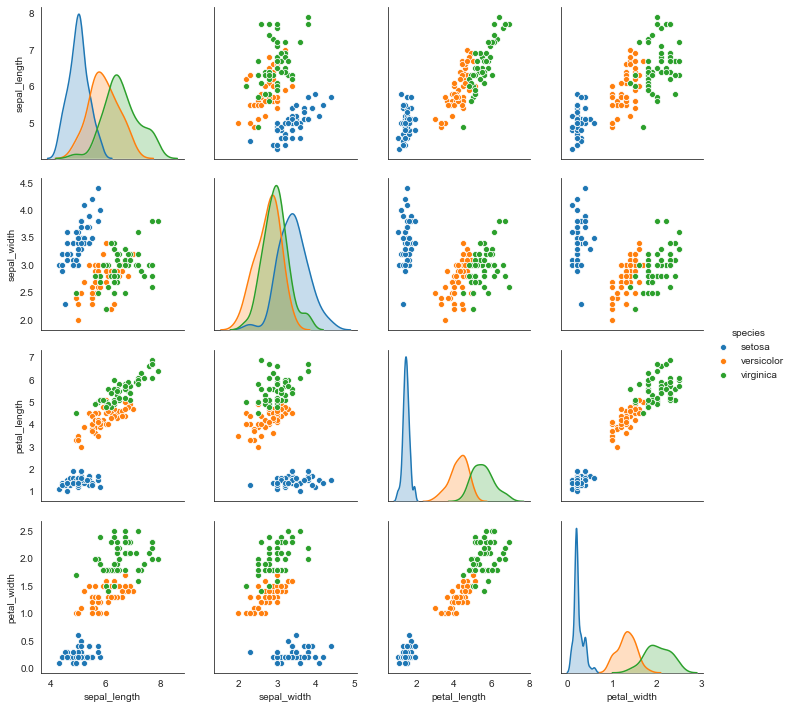

---
redirect_from:
  - "/test-pages/lab11"
interact_link: content/test_pages/lab11.ipynb
kernel_name: dviz
kernel_path: content/test_pages
has_widgets: false
title: |-
  Lab11
pagenum: 11
prev_page:
  url: /test_pages/lab10.html
next_page:
  url: 
suffix: .ipynb
search: 

comment: "***PROGRAMMATICALLY GENERATED, DO NOT EDIT. SEE ORIGINAL FILES IN /content***"
---

    <main class="jupyter-page">
    <div id="page-info"><div id="page-title">Lab11</div>
</div>
    <div class="jb_cell">

<div class="cell border-box-sizing code_cell rendered">
<div class="input">

<div class="inner_cell">
    <div class="input_area">
<div class=" highlight hl-ipython3"><pre><span></span><span class="kn">import</span> <span class="nn">matplotlib.pyplot</span> <span class="k">as</span> <span class="nn">plt</span>
<span class="kn">import</span> <span class="nn">pandas</span> <span class="k">as</span> <span class="nn">pd</span>
<span class="kn">import</span> <span class="nn">seaborn</span> <span class="k">as</span> <span class="nn">sns</span>
<span class="kn">import</span> <span class="nn">numpy</span> <span class="k">as</span> <span class="nn">np</span>
<span class="kn">import</span> <span class="nn">scipy.stats</span> <span class="k">as</span> <span class="nn">ss</span>
<span class="n">sns</span><span class="o">.</span><span class="n">set_style</span><span class="p">(</span><span class="s1">&#39;white&#39;</span><span class="p">)</span>
<span class="o">%</span><span class="k">matplotlib</span> inline
</pre></div>

    </div>
</div>
</div>

</div>
</div>

<div class="jb_cell">

<div class="cell border-box-sizing code_cell rendered">
<div class="input">

<div class="inner_cell">
    <div class="input_area">
<div class=" highlight hl-ipython3"><pre><span></span><span class="n">iris</span> <span class="o">=</span> <span class="n">sns</span><span class="o">.</span><span class="n">load_dataset</span><span class="p">(</span><span class="s1">&#39;iris&#39;</span><span class="p">)</span>
<span class="n">iris</span><span class="o">.</span><span class="n">head</span><span class="p">(</span><span class="mi">2</span><span class="p">)</span>
</pre></div>

    </div>
</div>
</div>

<div class="output_wrapper">
<div class="output">

<div class="jb_output_wrapper }}">
<div class="output_area">


<div class="output_html rendered_html output_subarea output_execute_result">
<div>
<style scoped>
    .dataframe tbody tr th:only-of-type {
        vertical-align: middle;
    }

    .dataframe tbody tr th {
        vertical-align: top;
    }

    .dataframe thead th {
        text-align: right;
    }
</style>
<table border="1" class="dataframe">
  <thead>
    <tr style="text-align: right;">
      <th></th>
      <th>sepal_length</th>
      <th>sepal_width</th>
      <th>petal_length</th>
      <th>petal_width</th>
      <th>species</th>
    </tr>
  </thead>
  <tbody>
    <tr>
      <td>0</td>
      <td>5.1</td>
      <td>3.5</td>
      <td>1.4</td>
      <td>0.2</td>
      <td>setosa</td>
    </tr>
    <tr>
      <td>1</td>
      <td>4.9</td>
      <td>3.0</td>
      <td>1.4</td>
      <td>0.2</td>
      <td>setosa</td>
    </tr>
  </tbody>
</table>
</div>
</div>

</div>
</div>
</div>
</div>

</div>
</div>

<div class="jb_cell">

<div class="cell border-box-sizing code_cell rendered">
<div class="input">

<div class="inner_cell">
    <div class="input_area">
<div class=" highlight hl-ipython3"><pre><span></span><span class="n">sns</span><span class="o">.</span><span class="n">pairplot</span><span class="p">(</span><span class="n">iris</span><span class="p">,</span><span class="n">hue</span><span class="o">=</span><span class="s1">&#39;species&#39;</span><span class="p">,</span><span class="n">diag_kind</span><span class="o">=</span><span class="s1">&#39;kde&#39;</span><span class="p">)</span>
</pre></div>

    </div>
</div>
</div>

<div class="output_wrapper">
<div class="output">

<div class="jb_output_wrapper }}">
<div class="output_area">


<div class="output_text output_subarea output_execute_result">
<pre>&lt;seaborn.axisgrid.PairGrid at 0x129b5a750&gt;</pre>
</div>

</div>
</div>
<div class="jb_output_wrapper }}">
<div class="output_area">


<div class="output_png output_subarea ">

</div>

</div>
</div>
</div>
</div>

</div>
</div>

<div class="jb_cell">

<div class="cell border-box-sizing code_cell rendered">
<div class="input">

<div class="inner_cell">
    <div class="input_area">
<div class=" highlight hl-ipython3"><pre><span></span><span class="kn">import</span> <span class="nn">altair</span> <span class="k">as</span> <span class="nn">alt</span>
<span class="n">alt</span><span class="o">.</span><span class="n">renderers</span><span class="o">.</span><span class="n">enable</span><span class="p">(</span><span class="s1">&#39;notebook&#39;</span><span class="p">)</span>
</pre></div>

    </div>
</div>
</div>

<div class="output_wrapper">
<div class="output">

<div class="jb_output_wrapper }}">
<div class="output_area">

<div class="output_subarea output_text output_error">
<pre>
<span class="ansi-red-fg">---------------------------------------------------------------------------</span>
<span class="ansi-red-fg">NoSuchEntryPoint</span>                          Traceback (most recent call last)
<span class="ansi-green-fg">~/anaconda3/envs/dviz/lib/python3.7/site-packages/altair/utils/plugin_registry.py</span> in <span class="ansi-cyan-fg">_enable</span><span class="ansi-blue-fg">(self, name, **options)</span>
<span class="ansi-green-intense-fg ansi-bold">    133</span>             <span class="ansi-green-fg">try</span><span class="ansi-blue-fg">:</span>
<span class="ansi-green-fg">--&gt; 134</span><span class="ansi-red-fg">                 </span>ep <span class="ansi-blue-fg">=</span> entrypoints<span class="ansi-blue-fg">.</span>get_single<span class="ansi-blue-fg">(</span>self<span class="ansi-blue-fg">.</span>entry_point_group<span class="ansi-blue-fg">,</span> name<span class="ansi-blue-fg">)</span>
<span class="ansi-green-intense-fg ansi-bold">    135</span>             <span class="ansi-green-fg">except</span> entrypoints<span class="ansi-blue-fg">.</span>NoSuchEntryPoint<span class="ansi-blue-fg">:</span>

<span class="ansi-green-fg">~/anaconda3/envs/dviz/lib/python3.7/site-packages/entrypoints.py</span> in <span class="ansi-cyan-fg">get_single</span><span class="ansi-blue-fg">(group, name, path)</span>
<span class="ansi-green-intense-fg ansi-bold">    216</span> 
<span class="ansi-green-fg">--&gt; 217</span><span class="ansi-red-fg">     </span><span class="ansi-green-fg">raise</span> NoSuchEntryPoint<span class="ansi-blue-fg">(</span>group<span class="ansi-blue-fg">,</span> name<span class="ansi-blue-fg">)</span>
<span class="ansi-green-intense-fg ansi-bold">    218</span> 

<span class="ansi-red-fg">NoSuchEntryPoint</span>: No &#39;notebook&#39; entry point found in group &#39;altair.vegalite.v3.renderer&#39;

During handling of the above exception, another exception occurred:

<span class="ansi-red-fg">ValueError</span>                                Traceback (most recent call last)
<span class="ansi-green-fg">&lt;ipython-input-8-74da33b3ed9c&gt;</span> in <span class="ansi-cyan-fg">&lt;module&gt;</span>
<span class="ansi-green-intense-fg ansi-bold">      1</span> <span class="ansi-green-fg">import</span> altair <span class="ansi-green-fg">as</span> alt
<span class="ansi-green-fg">----&gt; 2</span><span class="ansi-red-fg"> </span>alt<span class="ansi-blue-fg">.</span>renderers<span class="ansi-blue-fg">.</span>enable<span class="ansi-blue-fg">(</span><span class="ansi-blue-fg">&#39;notebook&#39;</span><span class="ansi-blue-fg">)</span>

<span class="ansi-green-fg">~/anaconda3/envs/dviz/lib/python3.7/site-packages/altair/utils/plugin_registry.py</span> in <span class="ansi-cyan-fg">enable</span><span class="ansi-blue-fg">(self, name, **options)</span>
<span class="ansi-green-intense-fg ansi-bold">    169</span>         <span class="ansi-green-fg">if</span> name <span class="ansi-green-fg">is</span> <span class="ansi-green-fg">None</span><span class="ansi-blue-fg">:</span>
<span class="ansi-green-intense-fg ansi-bold">    170</span>             name <span class="ansi-blue-fg">=</span> self<span class="ansi-blue-fg">.</span>active
<span class="ansi-green-fg">--&gt; 171</span><span class="ansi-red-fg">         </span><span class="ansi-green-fg">return</span> PluginEnabler<span class="ansi-blue-fg">(</span>self<span class="ansi-blue-fg">,</span> name<span class="ansi-blue-fg">,</span> <span class="ansi-blue-fg">**</span>options<span class="ansi-blue-fg">)</span>
<span class="ansi-green-intense-fg ansi-bold">    172</span> 
<span class="ansi-green-intense-fg ansi-bold">    173</span> 

<span class="ansi-green-fg">~/anaconda3/envs/dviz/lib/python3.7/site-packages/altair/utils/plugin_registry.py</span> in <span class="ansi-cyan-fg">__init__</span><span class="ansi-blue-fg">(self, registry, name, **options)</span>
<span class="ansi-green-intense-fg ansi-bold">     23</span>         self<span class="ansi-blue-fg">.</span>options <span class="ansi-blue-fg">=</span> options
<span class="ansi-green-intense-fg ansi-bold">     24</span>         self<span class="ansi-blue-fg">.</span>original_state <span class="ansi-blue-fg">=</span> registry<span class="ansi-blue-fg">.</span>_get_state<span class="ansi-blue-fg">(</span><span class="ansi-blue-fg">)</span>
<span class="ansi-green-fg">---&gt; 25</span><span class="ansi-red-fg">         </span>self<span class="ansi-blue-fg">.</span>registry<span class="ansi-blue-fg">.</span>_enable<span class="ansi-blue-fg">(</span>name<span class="ansi-blue-fg">,</span> <span class="ansi-blue-fg">**</span>options<span class="ansi-blue-fg">)</span>
<span class="ansi-green-intense-fg ansi-bold">     26</span> 
<span class="ansi-green-intense-fg ansi-bold">     27</span>     <span class="ansi-green-fg">def</span> __enter__<span class="ansi-blue-fg">(</span>self<span class="ansi-blue-fg">)</span><span class="ansi-blue-fg">:</span>

<span class="ansi-green-fg">~/anaconda3/envs/dviz/lib/python3.7/site-packages/altair/utils/plugin_registry.py</span> in <span class="ansi-cyan-fg">_enable</span><span class="ansi-blue-fg">(self, name, **options)</span>
<span class="ansi-green-intense-fg ansi-bold">    135</span>             <span class="ansi-green-fg">except</span> entrypoints<span class="ansi-blue-fg">.</span>NoSuchEntryPoint<span class="ansi-blue-fg">:</span>
<span class="ansi-green-intense-fg ansi-bold">    136</span>                 <span class="ansi-green-fg">if</span> name <span class="ansi-green-fg">in</span> self<span class="ansi-blue-fg">.</span>entrypoint_err_messages<span class="ansi-blue-fg">:</span>
<span class="ansi-green-fg">--&gt; 137</span><span class="ansi-red-fg">                     </span><span class="ansi-green-fg">raise</span> ValueError<span class="ansi-blue-fg">(</span>self<span class="ansi-blue-fg">.</span>entrypoint_err_messages<span class="ansi-blue-fg">[</span>name<span class="ansi-blue-fg">]</span><span class="ansi-blue-fg">)</span>
<span class="ansi-green-intense-fg ansi-bold">    138</span>                 <span class="ansi-green-fg">else</span><span class="ansi-blue-fg">:</span>
<span class="ansi-green-intense-fg ansi-bold">    139</span>                     <span class="ansi-green-fg">raise</span>

<span class="ansi-red-fg">ValueError</span>: 
To use the &#39;notebook&#39; renderer, you must install the vega package
and the associated Jupyter extension.
See https://altair-viz.github.io/getting_started/installation.html
for more information.
</pre>
</div>
</div>
</div>
</div>
</div>

</div>
</div>

<div class="jb_cell">

<div class="cell border-box-sizing code_cell rendered">
<div class="input">

<div class="inner_cell">
    <div class="input_area">
<div class=" highlight hl-ipython3"><pre><span></span><span class="kn">from</span> <span class="nn">vega_datasets</span> <span class="kn">import</span> <span class="n">data</span>
<span class="n">source</span><span class="o">=</span><span class="n">data</span><span class="o">.</span><span class="n">iris</span><span class="p">()</span>
</pre></div>

    </div>
</div>
</div>

</div>
</div>

<div class="jb_cell">

<div class="cell border-box-sizing code_cell rendered">
<div class="input">

<div class="inner_cell">
    <div class="input_area">
<div class=" highlight hl-ipython3"><pre><span></span><span class="n">alt</span><span class="o">.</span><span class="n">Chart</span><span class="p">(</span><span class="n">source</span><span class="p">)</span><span class="o">.</span><span class="n">mark_circle</span><span class="p">()</span><span class="o">.</span><span class="n">encode</span><span class="p">(</span>
    <span class="n">alt</span><span class="o">.</span><span class="n">X</span><span class="p">(</span><span class="n">alt</span><span class="o">.</span><span class="n">repeat</span><span class="p">(</span><span class="s1">&#39;column&#39;</span><span class="p">),</span><span class="nb">type</span><span class="o">=</span><span class="s1">&#39;quantitative&#39;</span><span class="p">),</span>
    <span class="n">alt</span><span class="o">.</span><span class="n">Y</span><span class="p">(</span><span class="n">alt</span><span class="o">.</span><span class="n">repeat</span><span class="p">(</span><span class="s1">&#39;row&#39;</span><span class="p">),</span><span class="nb">type</span><span class="o">=</span><span class="s1">&#39;quantitative&#39;</span><span class="p">),</span>
    <span class="n">color</span><span class="o">=</span><span class="s1">&#39;species&#39;</span>
<span class="p">)</span><span class="o">.</span> <span class="n">properties</span><span class="p">(</span>
    <span class="n">width</span><span class="o">=</span><span class="mi">200</span><span class="p">,</span>
    <span class="n">height</span><span class="o">=</span><span class="mi">400</span>
<span class="p">)</span><span class="o">.</span><span class="n">repeat</span><span class="p">(</span>
    <span class="n">row</span><span class="o">=</span><span class="p">[</span><span class="s1">&#39;sepal_length&#39;</span><span class="p">,</span><span class="s1">&#39;sepal_width&#39;</span><span class="p">,</span><span class="s1">&#39;petal_length&#39;</span><span class="p">,</span><span class="s1">&#39;petal_width&#39;</span><span class="p">],</span>
    <span class="n">column</span><span class="o">=</span><span class="p">[</span><span class="s1">&#39;sepal_length&#39;</span><span class="p">,</span><span class="s1">&#39;sepal_width&#39;</span><span class="p">,</span><span class="s1">&#39;petal_length&#39;</span><span class="p">,</span><span class="s1">&#39;petal_width&#39;</span><span class="p">]</span>
<span class="p">)</span>
</pre></div>

    </div>
</div>
</div>

<div class="output_wrapper">
<div class="output">

<div class="jb_output_wrapper }}">
<div class="output_area">


<div class="output_text output_subarea output_execute_result">
<pre>&lt;VegaLite 3 object&gt;

If you see this message, it means the renderer has not been properly enabled
for the frontend that you are using. For more information, see
https://altair-viz.github.io/user_guide/troubleshooting.html
</pre>
</div>

</div>
</div>
</div>
</div>

</div>
</div>

 


    </main>
    